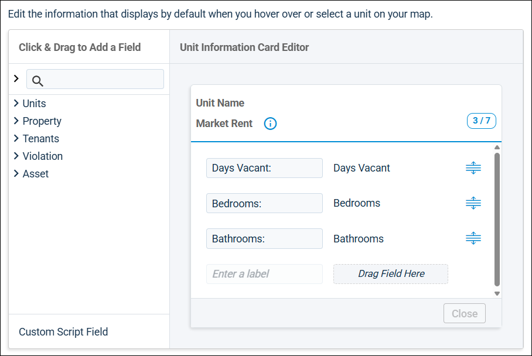

Source: https://rmxhelp.rentmanager.com/Topics/Express/CSH/BEV-Map-Edit-Unit-Information.htm
Edit Bird's Eye View (BEV) Unit Information (Pop-Up)
In a bird's eye view (BEV) map, the unit information card displays when a pin or shape is clicked. The default information shown on cards can be customized from each map's Map Settings. However, user-created map views can also be configured to override the default unit information, ensuring that the views you create display the most important details about your properties and units.
More Information
This topic covers editing the unit information setting on BEV map views. For details on editing the default unit information displayed on BEV maps, refer to Edit Bird's Eye View (BEV) Default Unit Information (Pop-Up).
Related Privileges
| Group | Privilege | Column |
|---|---|---|
| Bird's Eye View (BEV) | BEV Map Views | View, Edit |
For more information, refer to Control User Access.
To customize a map view's unit information card, go to  arrow_forward Rental Info arrow_forward Bird's Eye View (BEV) arrow_forward Manage BEV Map Views and select a user-created view. On that view's Unit Information tile, click Edit Unit Information.
arrow_forward Rental Info arrow_forward Bird's Eye View (BEV) arrow_forward Manage BEV Map Views and select a user-created view. On that view's Unit Information tile, click Edit Unit Information.
More Information
To configure the view's unit information card, you must first check the Customize Unit information when this view is applied box. If this is not checked, the view's unit information card will follow the Default Unit Information of the map it is applied to.
Card Editor
The card editor allows you to customize the fields that display on unit information cards. Each card can contain up to seven fields that can be arranged to display in order you wish. To change the order of the fields on the card, click and drag  .
.

Scripting Fields
The Click & Drag to Add a Field section is a list of scripting functions that can be used to create dynamic content in unit information cards. For example, you can add the Days Vacant and Market Rent fields to create a card with general vacancy information. In addition to the scripting functions available by default, you can add custom functions with the Custom Script Field. To add a field to the Unit Information Card Editor, double-click it or drag it into the editor tile.
Unit Information Card Editor
Each field added to the card editor contains a customizable field and the name of the original scripting function. For example, if you added the scripting field Bedrooms, you could change the customizable field to BR # to save space.
When a Custom Script Field is added to the card editor, it also adds a field in which you enter a custom script. Alternatively, you can click Open Script Builder to easily create your script. For more information, refer to Scripting. On a BEV map, the text entered into the customizable field displays, followed by the output of the scripting function.
More Information
The header of map view cards displays Unit Name and the script selected on the Conditional Formatting tile's Information to Evaluate field. For example, if the Information to Evaluate is set to Market Rent, then Market Rent displays under Unit Name. When the view is selected in a map, the output of the selected script displays.
For more information, refer to Manage BEV Map Views.